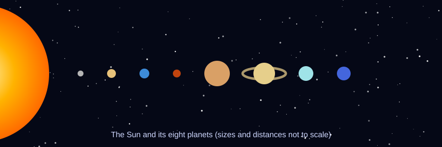
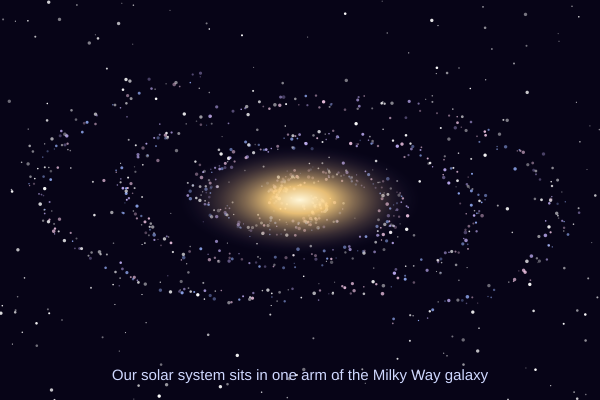

Welcome to the Solar System
Our solar system formed about 4.6 billion years ago from a giant spinning cloud of gas and dust. Most of that material collapsed into the center to become the Sun, and the leftovers clumped together into planets, moons, asteroids and comets.
Today eight planets orbit the Sun. The four inner planets (Mercury, Venus, Earth and Mars) are small and rocky. The four outer planets (Jupiter, Saturn, Uranus and Neptune) are giants made mostly of gas and ice. Use the menu above to visit each world.

Solar System at a Glance
- 8 planetsMercury, Venus, Earth, Mars, Jupiter, Saturn, Uranus and Neptune. Pluto was reclassified as a dwarf planet in 2006.
- One starThe Sun holds about 99.8% of all the mass in the solar system.
- 4.6 billion years oldThe Sun and planets formed together from the same cloud of gas and dust.
- Hundreds of moonsSaturn and Jupiter alone have hundreds of known moons between them.
- Asteroid beltA ring of rocky asteroids orbits between Mars and Jupiter.
- Moving fastThe whole solar system circles the center of the Milky Way at roughly 230 km every second.
Watch the Planets Orbit
Each planet moves at its real relative speed: Mercury laps the Sun in 88 days while Neptune takes 165 years. Press Start to set them in motion.
Earth years passed: 0.0

Where Are We?
The solar system is tucked into the Orion Arm of the Milky Way, about 26,000 light-years from the galaxy's center.
It takes the Sun about 230 million years to complete one trip around the galaxy, so the last time we were in this spot, the first dinosaurs were just appearing.